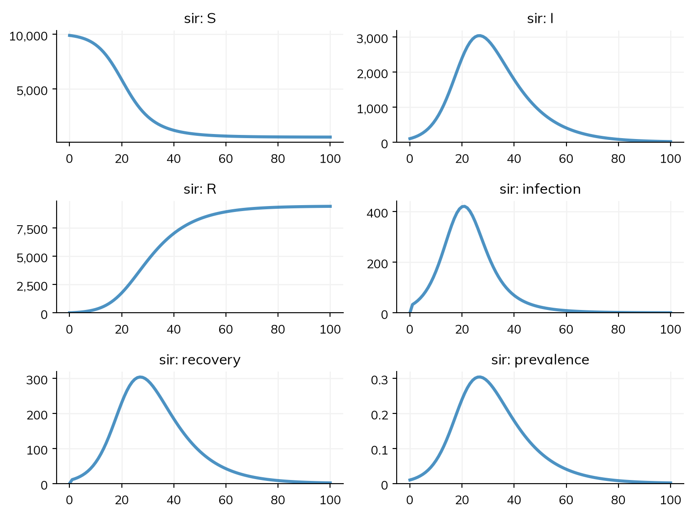
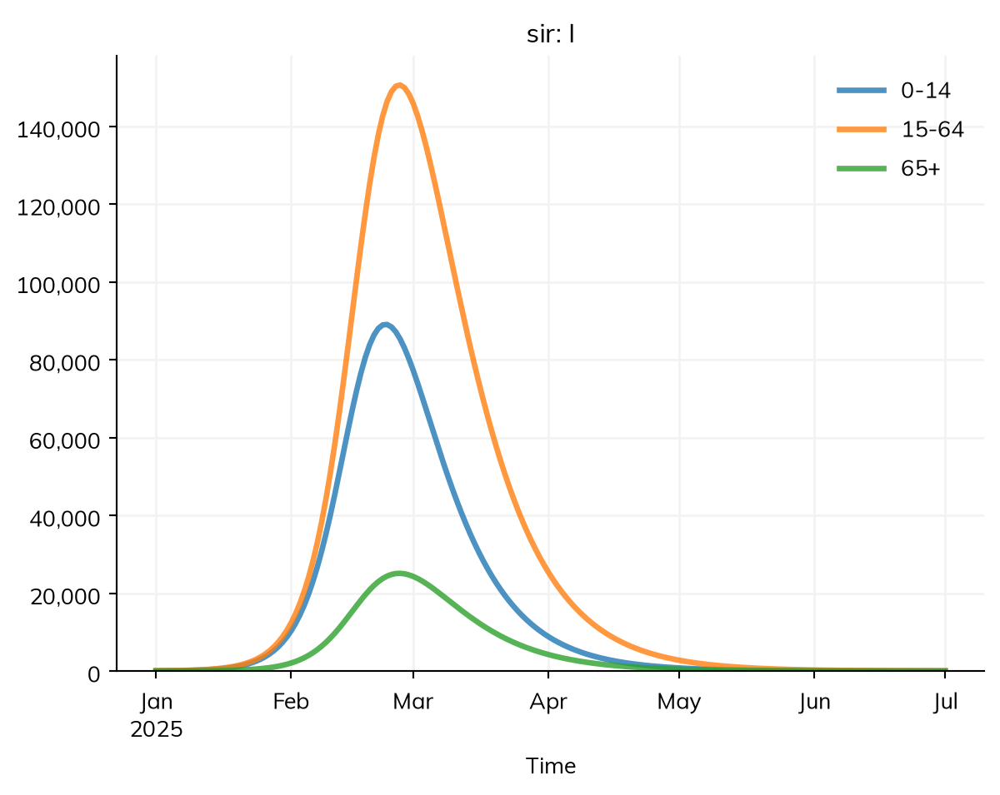
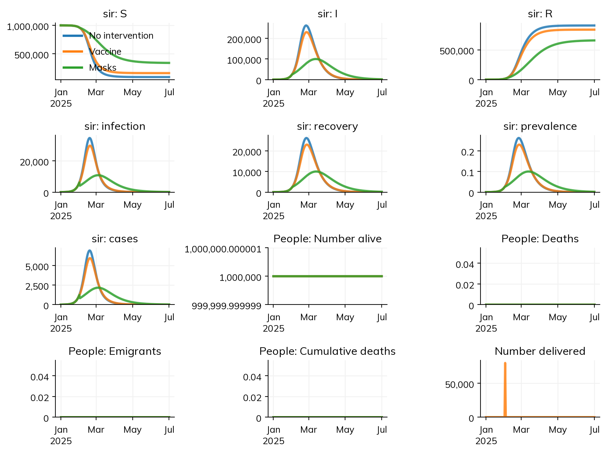
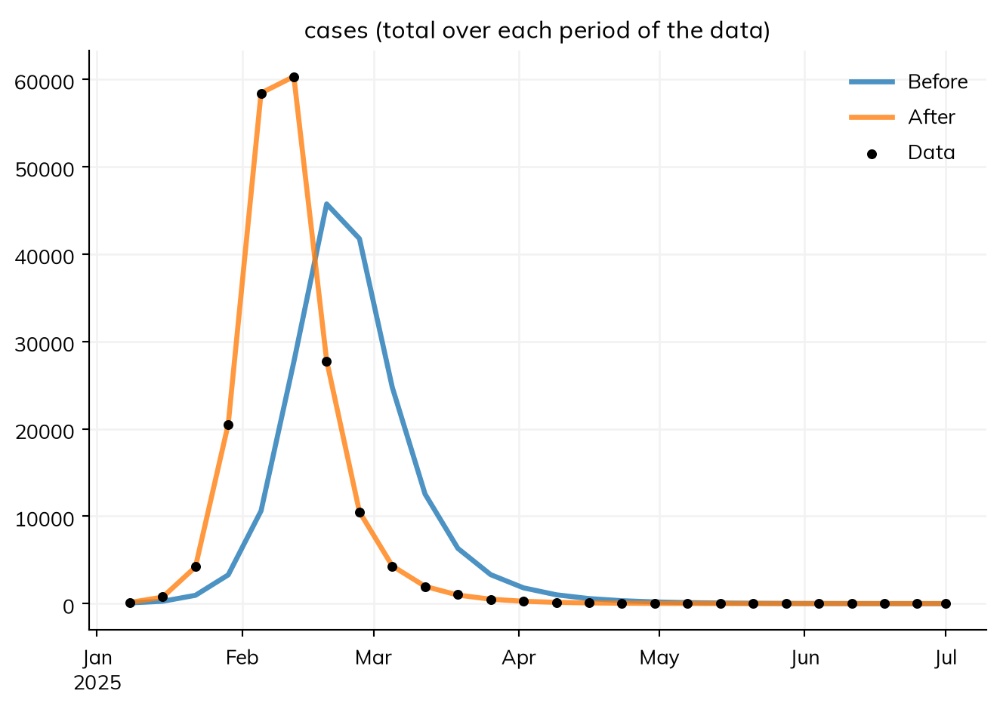

This page is a ten-minute tour of Starsim. It builds one model step by step: a simple epidemic, then the same epidemic with age groups, an intervention, data to fit it to, and many runs to show the uncertainty. Each step is a few lines of code, and each step says what the code means in the terms of an epidemiological model. The parameters are illustrative, not estimates for any particular disease or setting.
To follow along, install Starsim with pip install "starsim[jax]", and paste each block into a notebook or a Python script, in order.
An SIR model
In an SIR model, everyone is in one of three compartments: susceptible (S), infectious (I), or recovered (R). People move between them along two transitions:
Infection, from S to I. Each susceptible person is infected at a rate of β times the share of people who are infectious, so the number infected per day is β S I / N (frequency-dependent transmission).
Recovery, from I to R. People stay infectious for 10 days on average, so they recover at a rate of 1/10 per day.
In Starsim, the compartments are states, and each transition says where people move from, where they move to, and at what rate (after @):
import starsim as ssS, I, R = ss.states('S I R')infection = S >> I @0.3*I # From S to I, at a rate of 0.3 times the share infectiousrecovery = I >> R @ ss.days(10) # From I to R, after 10 days on averagesir = ss.Disease(infection, recovery)
Starsim kernels: Rust, OUT OF DATE (built before its source last changed, so results may be wrong): run "./build" in starsim/solvers/rust/
A state in a rate, like I in 0.3*I, is the share of people in it. A duration, like ss.days(10), is the average time spent in a state before leaving it. Since the duration is in days, β = 0.3 is per day. The model is the standard set of equations:
sir.equations()
dS/dt = -beta * S * I / N
dI/dt = beta * S * I / N - I / dur_I
dR/dt = I / dur_I
The basic reproduction number is R0 = β × the duration = 0.3 × 10 = 3. To run the model, give it to a sim with how long to run for:
Sim: sir, 10,000 people, as an ODE, days 0 to 100
sir: R0 = 3, with 100 infectious at the start
Done in 0.003 s; sir: 9,309 infections; at most 3,036 infectious, on day 27

The sim says what it ran and what happened: 10,000 people (the default population) as an ODE, R0 = 3 as expected, and the size and timing of the peak. Since nothing in this model is about individual people, Starsim runs it as a deterministic compartmental model (an ODE). The same model can also be run as a stochastic model or as agents, as the last section shows.
How the epidemic starts
By default, 1% of people start infected, and everyone else starts in the first state, S. The share that starts infected is init_prev, the initial prevalence:
sir = ss.Disease(infection, recovery, init_prev=0.001) # 0.1% start infected
init_prev puts people in the state that an infection leads to: I here, but E in an SEIR model, where people are exposed before they are infectious. To start people in any state, give init (the share of people in each state) or init_n (the number of people in each):
sir = ss.Disease(infection, recovery, init=dict(I=0.001, R=0.2)) # 0.1% infectious, 20% already immunesir = ss.Disease(infection, recovery, init_n=dict(I=10)) # 10 people infectious
Checking the model
Starsim fills in whatever the model leaves out: the population size, how long a state lasts beyond its average (here, exponentially distributed, as in an ODE), how people mix, and so on. describe() lists the whole model as Starsim has built it: every state, transition, and setting, with each value that Starsim chose itself marked as guessed, so that nothing is hidden:
sim.describe()
Sim 1 module, 10,000 people [guessed], days 0 to 100
solver
ode
guessed: every part of the model has a compartmental form
unit
day
from the typed values in the model
Disease 'sir' 3 states, 2 transitions
states
S, I, R
I infectious
init: init_prev = 0.01; the rest in S
guessed: the default, 1%
infection
S -> I transmission, from I
beta = 0.3 per day
rate = 0.3 × I.n / N
homogeneous mixing
recovery
I -> R spontaneous
time in I ~ exponential(mean = 10 days)
guessed: scalar duration
Mixing and interventions
mixing
homogeneous, 1 contact per day
guessed: no network given
Results and running
results
S, I, R, and one flow per transition; also prevalence
schedule
every day: sir
Notes
note
unit='day' (from the typed values in the model)
Age groups and contacts
Most respiratory infections spread differently between age groups. stratify() splits each state by age: here into three groups, with the share of the population in each. ss.contacts() says how much each group mixes with each other one: a contact matrix, in which row i, column j is the number of contacts a day that a person in group i has with people in group j. With contacts, β is the chance of infection per contact. This model also has an outcome, cases: the infections that are reported, here one in five.
S, I, R = ss.states('S I R')beta = ss.par(0.02, bounds=[0.005, 0.1]) # A parameter that can be fitted, between these boundsinfection = S >> I @ beta*Irecovery = I >> R @ ss.days(10)cases = ss.outcome(0.2*infection) # One infection in five is reportedsir = ss.Disease(infection, recovery, cases, init_prev=0.0001)sir.stratify(age={0: 0.3, 15: 0.6, 65: 0.1}) # Ages 0-14, 15-64, and 65+, with the share of people in eachcontacts = ss.contacts(ages=[0, 15, 65], matrix=[[10, 6, 1], [3, 8, 1], [3, 6, 3]])pars =dict(networks=contacts, total_pop=1e6, start='2025-01-01', stop='2025-07-01')sim = ss.Sim(sir, **pars)sim.run()sim.results.sir.I.by('age').plot()
Sim: sir, 1,000,000 people, as an ODE, 2025-01-01 to 2025-07-01
sir: R0 = 2.82, with 100 infectious at the start
Done in 0.0026 s; sir: 907,068 infections; at most 262,517 infectious, on 2025-02-25

Every state and transition has a result of the same name (S, I, R, infection, recovery), and so does each outcome (cases). by('age') splits a result by age group, and select() picks one group, e.g. sim.results.sir.I.select(age='65+').
Interventions
An intervention changes the course of the epidemic from some point on. Here are two: vaccinating 80% of people aged 65 and over on 1 February, with a vaccine that cuts their chance of infection by 90%, and masks, which cut transmission by 40% from the same day:
MultiSim: 3 runs of 3 scenarios (No intervention, Vaccine, Masks)
Done in 0.36 s

msim.summarize() gives each result over the whole run (the total of a flow, such as infections, and the final value of a state) for each scenario:
msim.summarize()
value
result
scenario
sir_S
No intervention
9.283216e+04
Vaccine
1.624281e+05
Masks
3.413558e+05
sir_I
No intervention
3.766274e+01
Vaccine
5.140501e+01
Masks
1.623704e+03
sir_R
No intervention
9.071302e+05
Vaccine
8.375205e+05
Masks
6.570205e+05
sir_infection
No intervention
9.070678e+05
Vaccine
8.374719e+05
Masks
6.585442e+05
sir_recovery
No intervention
9.071302e+05
Vaccine
8.375205e+05
Masks
6.570205e+05
sir_prevalence
No intervention
4.984270e-02
Vaccine
4.601821e-02
Masks
3.610595e-02
sir_cases
No intervention
1.814136e+05
Vaccine
1.674944e+05
Masks
1.317088e+05
alive
No intervention
1.000000e+06
Vaccine
1.000000e+06
Masks
1.000000e+06
new_deaths
No intervention
0.000000e+00
Vaccine
0.000000e+00
Masks
0.000000e+00
new_emigrants
No intervention
0.000000e+00
Vaccine
0.000000e+00
Masks
0.000000e+00
cum_deaths
No intervention
0.000000e+00
Vaccine
0.000000e+00
Masks
0.000000e+00
vaccination_delivered
Vaccine
8.000000e+04
vaccination_eligible
Vaccine
1.000000e+05
vaccination_coverage
Vaccine
8.000000e-01
Data and fitting
A model is fitted by finding the values of its parameters that make its results match data. To try this where the right answer is known, make data from the model itself: run it with β = 0.025, and draw weekly counts of cases from it, with random noise as in real reporting. The noise is drawn with the true sim’s own random seed (rand_seed=2), not the default seed of the sims being fitted, since the noise in real data has nothing to do with the model’s.
truth = ss.Sim(sir, pars=dict(beta=0.025), rand_seed=2, **pars)truth.run()data = truth.to_data('cases', resample='week')data.head()
Sim: sir, 1,000,000 people, as an ODE, 2025-01-01 to 2025-07-01
sir: R0 = 3.53, with 100 infectious at the start
Done in 0.0019 s; sir: 954,833 infections; at most 341,960 infectious, on 2025-02-11
date
cases
0
2025-01-08
120
1
2025-01-15
768
2
2025-01-22
4216
3
2025-01-29
20454
4
2025-02-05
58362
Data is matched to results by name: the column cases is compared with the result cases, and since the data is weekly, each row is compared with the total of the model’s cases over its week. sim.fit() then fits every parameter that has bounds (here, β) to every result that has data:
Searching on a log scale: beta
Fitting by nelder-mead (1 fitted parameter, for which it is faster than gradients; override with method=)
Converged: Optimization terminated successfully. (34 evaluations)
The goodness of fit is 0.002704 at the best values and 1.015 at the initial values

The plot shows the model’s cases with the starting value of β (before) and the fitted one (after), against the data. As in the fit, the model’s cases are added up over each week, so that each point is compared with a week of data. fit.pars has the values found: β is close to the 0.025 the data was made with.
fit.pars
sc.obj(beta=0.024990760550277973)
Uncertainty and many runs
The ODE gives one answer: the epidemic as expected on average. A real epidemic varies by chance from one outbreak to the next, and more so in a small population or when there are few cases. To see this, run the model as a stochastic model, in which the number of people who move between states each day is random, and run it many times. solver='binomial' runs the same model this way (as a chain-binomial model), and n_runs=20 runs it 20 times, each with its own random seed:
The plot shows the median of the runs, and the range that holds 95% of them. msim.summarize() gives the same for each result over the whole run: the median, the low and high ends of that range, the mean, and the standard deviation:
msim.summarize()
median
low
high
mean
std
result
sir_S
41332.000000
40914.350000
41840.200000
41384.550000
280.427794
sir_I
5.000000
2.475000
9.575000
5.250000
2.118372
sir_R
958663.000000
958155.850000
959081.225000
958610.200000
279.906699
sir_infection
958568.000000
958059.800000
958985.650000
958515.450000
280.427794
sir_recovery
958663.000000
958155.850000
959081.225000
958610.200000
279.906699
sir_prevalence
0.053988
0.053887
0.054121
0.053987
0.000064
sir_cases
191800.500000
191003.275000
192758.050000
191774.550000
465.731089
The model can also be run as agents, one for each person (solver='abm'), which is what a model needs when people differ in ways that compartments can’t hold, such as their contacts in a network. The agent-based tutorials show how.
Next steps
The tutorials cover each of these steps in more depth, one at a time, with a model of a measles outbreak.
The user guide covers each topic in full, including networks, demographics, custom modules, and solvers.